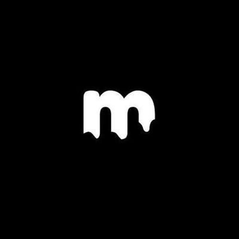

Flow 01
Choose Strategy
Users compare strategy cards by APY, risk profile, lock behavior, and live monitoring score.

This page is designed to give grant reviewers and partners the impression of a real product direction: premium, modern, clear, and already visually alive.
Users compare strategy cards by APY, risk profile, lock behavior, and live monitoring score.
Sentinel Explain turns protocol complexity into plain language before any wallet confirmation happens.
Once deployed, users track yield, receive alerts, and rebalance through simple premium actions.
Sentinel Yield is designed to feel like a premium operating layer for Radix yield — one that makes sophisticated capital flows approachable, safe-feeling, and visually unforgettable.